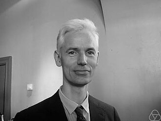

Sir Timothy Gowers | |
|---|---|
 Gowers at the Abel Prize ceremony in 2012 | |
| Born | William Timothy Gowers 20 November 1963[1] |
| Education | King's College School, Cambridge Eton College |
| Alma mater | University of Cambridge (BA, MA, PhD) |
| Known for | |
| Awards |
|
| Scientific career | |
| Institutions | University of Cambridge University College London |
| Thesis | Symmetric Structures in Banach Spaces (1990) |
| Béla Bollobás[3] | |
Doctoral students | David Conlon Ben Green Tom Sanders[3] |
| Website | gowers www |
{kind=link}
Sir William Timothy Gowers, FRS (/ˈɡaʊ.ərz/; born 20 November 1963)[1] is a British mathematician. He is the holder of the Combinatorics chair at the Collège de France, a Research Professor at the University of Cambridge and a Fellow of Trinity College, Cambridge. In 1998, he received the Fields Medal for research connecting the fields of functional analysis and combinatorics.[3][4][5]
Education
Gowers attended King's College School, Cambridge, as a choirboy in the King's College choir, and then Eton College[1] as a King's Scholar, where he was taught mathematics by Norman Routledge.[6] In 1981, Gowers won a gold medal at the International Mathematical Olympiad with a perfect score.[7][8] He completed his PhD, with a dissertation on Symmetric Structures in Banach Spaces[9] at Trinity College, Cambridge in 1990, supervised by Béla Bollobás.[9][3]
Career and research
After his PhD, Gowers was elected to a Junior Research Fellowship at Trinity College. From 1991 until his return to Cambridge in 1995 he was lecturer at University College London. He was elected to the Rouse Ball Professorship at Cambridge in 1998. During 2000–2 he was visiting professor at Princeton University. In May 2020 it was announced[10] that he would be taking up the Chaire de Combinatoire at the College de France beginning in October 2020, though he [11] continues to reside in Cambridge and maintain a part-time affiliation at the university, as well as enjoy the privileges of his life fellowship of Trinity College.
Gowers initially worked on Banach spaces. He used combinatorial tools in proving several of Stefan Banach's conjectures in the subject, in particular constructing a Banach space with almost no symmetry, serving as a counterexample to several other conjectures.[12] With Bernard Maurey he resolved the "unconditional basic sequence problem" in 1992, showing that not every infinite-dimensional Banach space has an infinite-dimensional subspace that admits an unconditional Schauder basis.[13]
After this, Gowers turned to combinatorics and combinatorial number theory. In 1997 he proved[14] that the Szemerédi regularity lemma necessarily comes with tower-type bounds.
In 1998, Gowers proved[15] the first effective bounds for Szemerédi's theorem, showing that any subset free of k-term arithmetic progressions has cardinality for an appropriate . One of the ingredients in Gowers's argument is a tool now known as the Balog–Szemerédi–Gowers theorem, which has found many further applications. He also introduced the Gowers norms, a tool in arithmetic combinatorics, and provided the basic techniques for analysing them. This work was further developed by Ben Green and Terence Tao, leading to the Green–Tao theorem.
In 2003, Gowers established a regularity lemma for hypergraphs,[16] analogous to the Szemerédi regularity lemma for graphs.
In 2005, he introduced[17] the notion of a quasirandom group.
More recently, Gowers has worked on Ramsey theory in random graphs and random sets with David Conlon, and has turned his attention[18] to other problems such as the P versus NP problem. He has also developed an interest, in joint work with Mohan Ganesalingam,[19] in automated problem solving.
Gowers has an Erdős number of three.[20]
Popularisation work
Gowers has written several works popularising mathematics, including Mathematics: A Very Short Introduction (2002),[21] which describes modern mathematical research for the general reader. He was consulted about the 2005 film Proof, starring Gwyneth Paltrow and Anthony Hopkins. He edited The Princeton Companion to Mathematics (2008), which traces the development of various branches and concepts of modern mathematics.[22] For his work on this book, he won the 2011 Euler Book Prize of the Mathematical Association of America.[23] In May 2020 he was made a professor at the Collège de France, a historic institution dedicated to popularising science.[24]
Blogging
After asking on his blog whether "massively collaborative mathematics" was possible,[25] he solicited comments on his blog from people who wanted to try to solve mathematical problems collaboratively.[26] The first problem in what is called the Polymath Project, Polymath1, was to find a new combinatorial proof to the density version of the Hales–Jewett theorem. After seven weeks, Gowers wrote on his blog that the problem was "probably solved".[27]
In 2009, with Olof Sisask and Alex Frolkin, he invited people to post comments to his blog to contribute to a collection of methods of mathematical problem solving.[28] Contributors to this Wikipedia-style project, called Tricki.org, include Terence Tao and Ben Green.[29]
Elsevier boycott
In 2012, Gowers posted to his blog to call for a boycott of the publishing house Elsevier.[30][2] A petition ensued, branded the Cost of Knowledge project, in which researchers commit to stop supporting Elsevier journals. Commenting on the petition in The Guardian, Alok Jha credited Gowers with starting an Academic Spring.[31][32]
In 2016, Gowers started Discrete Analysis to demonstrate that a high-quality mathematics journal could be inexpensively produced outside of the traditional academic publishing industry.[33]
Awards and honours
In 1994, Gowers was an invited speaker at the International Congress of Mathematicians in Zurich where he discussed the theory of infinite-dimensional Banach spaces.[34] In 1996, Gowers received the Prize of the European Mathematical Society, and in 1998 the Fields Medal for research on functional analysis and combinatorics.[35][36] In 1999 he became a Fellow of the Royal Society and a member of the American Philosophical Society in 2010.[37] In 2012 he was knighted by the British monarch for services to mathematics.[38][39] He also sits on the selection committee for the Mathematics award, given under the auspices of the Shaw Prize. He was listed in Nature's 10 people who mattered in 2012.[2]
Personal life
Timothy Gowers was born on 20 November 1963, in Marlborough, Wiltshire, England.[34]
Gowers's father was Patrick Gowers, a composer; his great-grandfather was Sir Ernest Gowers, a British civil servant who was best known for guides to English usage; and his great-great-grandfather was Sir William Gowers, a neurologist. He has two siblings, the writer Rebecca Gowers, and the violinist Katharine Gowers. He has five children[40] and plays jazz piano.[1]
In 1988, Gowers married Emily Thomas, a classicist and Cambridge academic: they divorced in 2007. Together they had three children. In 2008, he married for a second time, to Julie Barrau, a University Lecturer in British Medieval History at the University of Cambridge. They have two children together.[41]
In November 2012, Gowers opted to undergo catheter ablation to treat a sporadic atrial fibrillation, after performing a mathematical risk–benefit analysis to decide whether to have the treatment.[42]
Publications
Selected research articles
- Gowers, W. T.; Maurey, Bernard (6 May 1992). "The unconditional basic sequence problem". arXiv:math/9205204.
- Gowers, W. T. (2001). "A new proof of Szemerédi's theorem". Geom. Funct. Anal. 11 (3): 465–588. CiteSeerX 10.1.1.145.2961. doi:10.1007/s00039-001-0332-9. S2CID 124324198.
- Gowers, W. T. (2007). "Hypergraph regularity and the multidimensional Szemerédi theorem". Ann. of Math. 166 (3): 897–946. arXiv:0710.3032. Bibcode:2007arXiv0710.3032G. doi:10.4007/annals.2007.166.897. S2CID 56118006.
Popular mathematics books
- Gowers, Timothy (2002). Mathematics: A Very Short Introduction. Oxford University Press. ISBN 978-0-19-285361-5.[43]
- Gowers, Timothy, ed. (2008). The Princeton Companion to Mathematics. Princeton University Press. ISBN 978-0-691-11880-2.
References
- ^ a b c d e Anon (2013). "Gowers, Sir (William) Timothy". Who's Who (online Oxford University Press ed.). Oxford: A & C Black. doi:10.1093/ww/9780199540884.013.U17733. (Subscription or UK public library membership required.)
- ^ a b c Brumfiel, G.; Tollefson, J.; Hand, E.; Baker, M.; Cyranoski, D.; Shen, H.; Van Noorden, R.; Nosengo, N.; et al. (2012). "366 days: Nature's 10". Nature. 492 (7429): 335–343. Bibcode:2012Natur.492..335.. doi:10.1038/492335a. PMID 23257862. S2CID 4418086.
- ^ a b c d Timothy Gowers at the Mathematics Genealogy Project
- ^ Timothy Gowers's results at International Mathematical Olympiad
- ^ O'Connor, John J.; Robertson, Edmund F., "Timothy Gowers", MacTutor History of Mathematics Archive, University of St Andrews
- ^ Dalyell, Tam (29 May 2013). "Norman Arthur Routledge: Inspirational teacher and mathematician". The Independent. Archived from the original on 21 June 2022. Retrieved 15 April 2020.
- ^ Mohammed Aassila – Olympiades Internationales de Mathématiques. Ed ellipses, Paris 2003 p. 156
- ^ "William Timothy (Tim) Gowers - Results - 1981 - International Mathematical Olympiad"
- ^ a b Gowers, William Timothy (1990). Symmetric structures in Banach spaces. cam.ac.uk (PhD thesis). University of Cambridge. doi:10.17863/CAM.16243. OCLC 556577304. EThOS uk.bl.ethos.333263.
- ^ "Décret du 18 mai 2020 portant nomination et titularisation (enseignements supérieurs)".
- ^ "Timothy Gowers twitter feed".
- ^ 1998 Fields Medalist William Timothy Gowers from the American Mathematical Society
- ^ Gowers, William Timothy; Maurey, Bernard (1993). "The unconditional basic sequence problem". Journal of the American Mathematical Society. 6 (4): 851–874. arXiv:math/9205204. doi:10.1090/S0894-0347-1993-1201238-0. S2CID 5963081.
- ^ Gowers, W. Timothy (1997). "A lower bound of tower type for Szemeredi's uniformity lemma". Geometric and Functional Analysis. 7 (2): 322–337. doi:10.1007/PL00001621. MR 1445389. S2CID 115242956.
- ^ Gowers, W. Timothy (2001). "A new proof of Szemeréi's theorem". Geometric and Functional Analysis. 11 (3): 465–588. CiteSeerX 10.1.1.145.2961. doi:10.1007/s00039-001-0332-9. MR 1844079. S2CID 124324198.
- ^ Gowers, W. Timothy (2007). "Hypergraph regularity and the multidimensional Szemeredi theorem". Annals of Mathematics. 166 (3): 897–946. arXiv:0710.3032. doi:10.4007/annals.2007.166.897. MR 2373376. S2CID 56118006.
- ^ Gowers, W.Timothy (2008). "Quasirandom groups". Combinatorics, Probability and Computing. 17 (3): 363–387. arXiv:0710.3877. doi:10.1017/S0963548307008826. MR 2410393. S2CID 45356584.
- ^ "What I did in my summer holidays". 24 October 2013.
- ^ Ganesalingam, Mohan; Gowers, W. Timothy (2013). "A fully automatic problem solver with human-style output". arXiv:1309.4501 [cs.AI].
- ^ "Mathematical Reviews: Collaboration Distance". mathscinet.ams.org. Retrieved 22 March 2018.
- ^ Gowers, Timothy (2002). Mathematics: A Very Short Introduction. Very Short Introductions. Vol. 66. Oxford: Oxford University Press. ISBN 978-0-19-285361-5. MR 2147526.
- ^ Roberts, David P. (2009). "Review: The Princeton Companion to Mathematics". Mathematical Association of America. Retrieved 1 July 2020.
- ^ January 2011 Prizes and Awards, American Mathematical Society, retrieved 1 February 2011.
- ^ "Sonia Garel et Timothy Gowers nommés professeurs au Collège de France". 26 May 2020.
- ^ Gowers, T.; Nielsen, M. (2009). "Massively collaborative mathematics". Nature. 461 (7266): 879–881. Bibcode:2009Natur.461..879G. doi:10.1038/461879a. PMID 19829354. S2CID 205050360.
- ^ Gowers, Timothy (27 January 2009). Is massively collaborative mathematics possible?. Gowers's Weblog. Retrieved 30 March 2009.
- ^ Nielsen, Michael (20 March 2009). "The Polymath project: scope of participation". Retrieved 30 March 2009.
- ^ Gowers, Timothy (16 April 2009). "Tricki now fully live". Retrieved 16 April 2009.
- ^ Tao, Terence (16 April 2009). "Tricki now live". What's new. Retrieved 16 April 2009.
- ^ Whitfield, J. (2012). "Elsevier boycott gathers pace:Rebel academics ponder how to break free of commercial publishers". Nature. doi:10.1038/nature.2012.10010. S2CID 153496298.
- ^ Grant, Bob (7 February 2012). "Occupy Elsevier?". The Scientist. Retrieved 12 February 2012.
- ^ Jha, Alok (9 April 2012). "Academic spring: how an angry maths blog sparked a scientific revolution". The Guardian.
- ^ Gowers, Timothy (10 September 2015). "Discrete Analysis – an arXiv overlay journal". Gower's Weblog. Retrieved 2 March 2016.
- ^ a b "Timothy Gowers – Biography". Maths History. Retrieved 6 March 2023.
- ^ Lepowsky, James; Lindenstrauss, Joram; Manin, Yuri I.; Milnor, John (January 1999). "The Mathematical Work of the 1998 Fields Medalists" (PDF). Notices of the AMS. 46 (1): 17–26.
- ^ Gowers, W.T. (1998). "Fourier analysis and Szemerédi's theorem". Proceedings of the International Congress of Mathematicians 1998 - Berlin - Plenary Lectures and Ceremonies. Vol. 1. pp. 617–629. doi:10.4171/dms/1-1/23. ISBN 978-3-98547-044-0.
- ^ "APS Member History". search.amphilsoc.org. Retrieved 19 April 2021.
- ^ "No. 60173". The London Gazette (Supplement). 16 June 2012. p. 1.
- ^ "Queens Birthday Honors list" (PDF). Archived from the original (PDF) on 6 September 2012. Retrieved 16 June 2012.
- ^ "Status update". Gowers's Weblog. Timothy Gowers. 30 November 2010. Retrieved 1 December 2010.
- ^ "Gowers, Sir (William) Timothy, (born 20 Nov. 1963), Rouse Ball Professor of Mathematics, University of Cambridge, since 1998; Fellow of Trinity College, Cambridge, since 1995; Royal Society 2010 Anniversary Research Professor, since 2010 | WHO'S WHO & WHO WAS WHO". Who's Who 2019. Oxford University Press. 1 December 2018. doi:10.1093/ww/9780199540884.013.U17733. ISBN 978-0-19-954088-4. Retrieved 28 July 2019.
- ^ Mathematics meets real life, by Tim Gowers, 5 November 2012.
- ^ Gouvêa, Fernando Q. (23 May 2003). "Review of Mathematics: A Very Short Introduction by Timothy Gowers". MAA Reviews, Mathematical Association of America website.
External links
- 1998 Fields Medalist William Timothy Gowers from the American Mathematical Society
- Video lectures by Timothy Gowers on Computational Complexity and Quantum Computation
- Timothy Gowers in Faces of Mathematics
- BBC News (1998): British academics Tim Gowers and Richard Borcherds win top maths awards
- "Multiplying and dividing by whole numbers: Why it is more difficult than you might think", lecture by Timothy Gowers at Gresham College, 22 May 2007 (available for download as video and audio files)
- Körner, Tom (September 1999). "Interview with Tim Gowers (Cambridge)" (PDF). Newsletter of the European Mathematical Society (33): 8–9.
- "William Timothy Gowers". PlanetMath.
- Listen to Timothy Gowers on The Forum from BBC World Service Radio
- Timothy Gowers's results at International Mathematical Olympiad
- 'What can learned societies do to improve scholarly communication?' Audio recording of Sir Timothy Gower's presentation at State Library of Queensland on YouTube, 29 June 2017